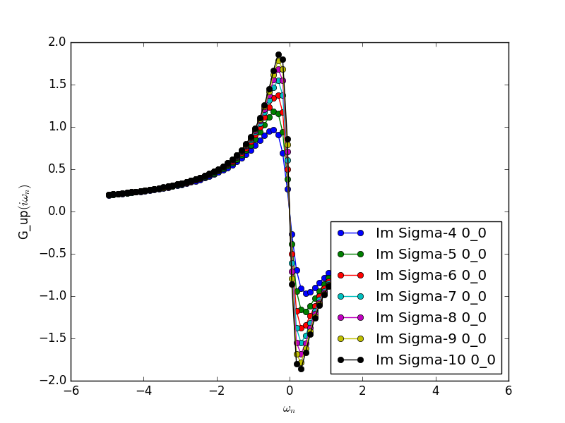

Programs¶
DCore has four programs, dcore_pre, dcore, dcore_check and dcore_post.
All programs can read input files of the same type and get the information by using blocks.
For details of input parameters defined in each block, see the next section.
| Program | Blocks to read from the input file | Output HDF files |
|---|---|---|
dcore_pre |
[model], [system] | seedname.h5 |
dcore |
[model], [system], [impurity-solver], [control] | seedname.out.h5 |
dcore_check |
[model], [tool] | — |
dcore_post |
[model], [system], [impurity-solver], [tool] | — |
Pre-processing : dcore_pre¶
This program generates model HDF5 file (seedname.h5) by reading parameters defined in [model] and [system] blocks.
You need to execute this program before running the main program, dcore.
$ dcore_pre input-file
Main program : dcore¶
This program performs DMFT cycle and output the self energy etc. into a HDF5
file (seedname.out.h5) by reading parameters defined in [model], [system], [impurity-solver] and [control] blocks.
$ dcore input-file
Convergence-check : dcore_check¶
This program is used to check the convergence of the DMFT loop by reading parameters defined in [model] and [tool] blocks.
$ dcore_check input-file
dcore_check shows the history of the calculation of the chemical potential and the average of the self energy for imaginary frequencies,
at the last seven iterations.
{kind=link}
The maximum frequency of this plot is specified with the parameter omega_check
in the [tool] block.
Also, this program generates a text file, seedname_sigma.dat, which contains the local self energy at the final step as follows:
# Local self energy at imaginary frequency
# [Column] Data
# [1] Frequency
# [2] Re(Sigma_{shell=0, spin=up, 0, 0})
# [3] Im(Sigma_{shell=0, spin=up, 0, 0})
# [4] Re(Sigma_{shell=0, spin=down, 0, 0})
# [5] Im(Sigma_{shell=0, spin=down, 0, 0})
-157.001093 0.994751 0.006358 0.994751 0.006358
-156.844013 0.994751 0.006365 0.994751 0.006365
-156.686934 0.994751 0.006371 0.994751 0.006371
:
Post-processing : dcore_post¶
This program computes the total DOS (seedname_dos.dat) and k-resolved spectral function (seedname_akw.dat) from the outputted HDF5 file (seedname.out.h5).
This program reads the parameters defined in the [model], [system], [impurity-solver] and [tool] blocks.
$ dcore_post input-file
The computed spectral function can be drawn by
$ gnuplot [seedname]_akw.gp
Using this gnuplot script, you can also see the original (DFT) band structure as follows if either seedname_band.dat (Wannier90 output) or dir-wan/dat.iband (RESPACK output) exists.

“+” indicates the original band structure.
The original band structure is shifted by the chemical potential specified by mu in [system] block.